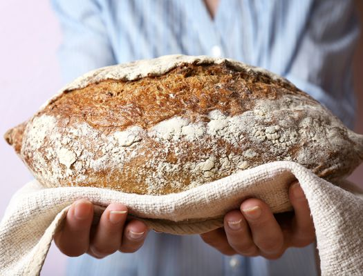

С помощью дальнейших инструкций вы сможете испечь прекрасную буханку в хлебопечке в первый же раз. Используйте свежие качественные ингредиенты, так как нельзя ожидать хорошего результата от просроченной муки или дрожжей.
1. Поставьте хлебопечку на ровную огнеупорную поверхность. Убедитесь, что она находится вдали от источников тепла (плита или солнечный свет), а также не на сквозняке, так как все эти факторы влияют на температуру внутри хлебопечки. Не включайте хлебопечку в розетку на этом этапе. Откройте крышку. Достаньте форму за ручку, слегка поворачивая в сторону или вытягивая вверх, в зависимости от модели вашей хлебопечки.
2. Убедитесь, что в тестомешальной лопасти не застряло крошек хлеба, оставшихся от предыдущей выпечки. Наденьте лопасть на стержень на дне формы. Лопасть можно будет одеть только в одной позиции, так как стержень и та часть лопасти, что одевается на него, сделаны в форме буквы D.
3. Влейте воду, молоко и/или другие жидкости, за исключением тех случаев, когда в инструкции к хлебопечке сказано, что сначала надо добавлять сухие ингредиенты. Если это так, измените порядок загружения ингредиентов в хлебопечку, начав с дрожжей. 4. Всыпайте муку так, чтобы она полностью покрывала жидкость. Добавьте все сухие ингредиенты, указанные в рецепте, например, сухое молоко. Соль, сахар и масло уложите в разные углы формы, чтобы они не касались друг друга.
5. Сделайте маленький «колодец» в середине муки так, чтобы он не доходил до жидкости и добавьте в него дрожжи. Если «колодец» достал до жидкости, дрожжи промокнут и начнут быстро работать.
6. Поставьте форму в хлебопечку, плотно закрепив на месте. В зависимости от модели, в хлебопечке могут быть специальные крепления, которые закрепляют форму в хлебопечке, или форму нужно слегка вкрутить в дно хлебопечки. Опустите ручку и закройте крышку. Затем включите хлебопечку в розетку.
7. Выбираете программу, цвет корки и размер буханки, если возможно. Нажмите кнопку «Старт». Сразу же начнется процесс замешивания, если в машине нет специального периода «отдыха», чтобы установить температуру, и вы не запрограммировали хлебопечку, чтобы хлеб был испечен к утру.
8. Когда тесто будет замешано, хлебопечка издаст звуковой сигнал, и вы можете добавить дополнительные ингредиенты, например, сухофрукты, если хотите. Откройте крышку, всыпьте продукты и закрывайте крышку.
9. В конце цикла хлебопечка издаст звуковой сигнал, чтобы сообщить о том, что тесто или хлеб готов (в зависимости от программы). Нажмите кнопку «Стоп». Откройте крышку. Если достаете хлеб, не забудьте надеть рукавицы для духовки, чтобы не обжечься. Не наклоняйтесь и не облокачивайтесь на открытую хлебопечку, так как оттуда может выходить горячий воздух, которым тоже можно обжечься.
10. Все еще в рукавицах переверните форму вверх дном и потрясите несколько раз. Если необходимо, постучите дно о деревянную доску.
11. Если тестомешальная лопасть застряла в хлебе, используйте деревянную лопатку или другой огнеупорный инструмент, чтобы достать ее. Она легко выйдет.
12. Положите хлеб на решетку и дайте остыть. Выключите хлебопечку из сети и дайте остыть перед тем, как использовать снова. Слишком горячая машина не сможет испечь нормальную буханку, и многие хлебопечки не включатся, если они слишком горячие. Промойте форму и тестомешальную лопасть и протрите хлебопечку. Все части хлебопечки должны быть холодными и сухими, когда вы их убираете.